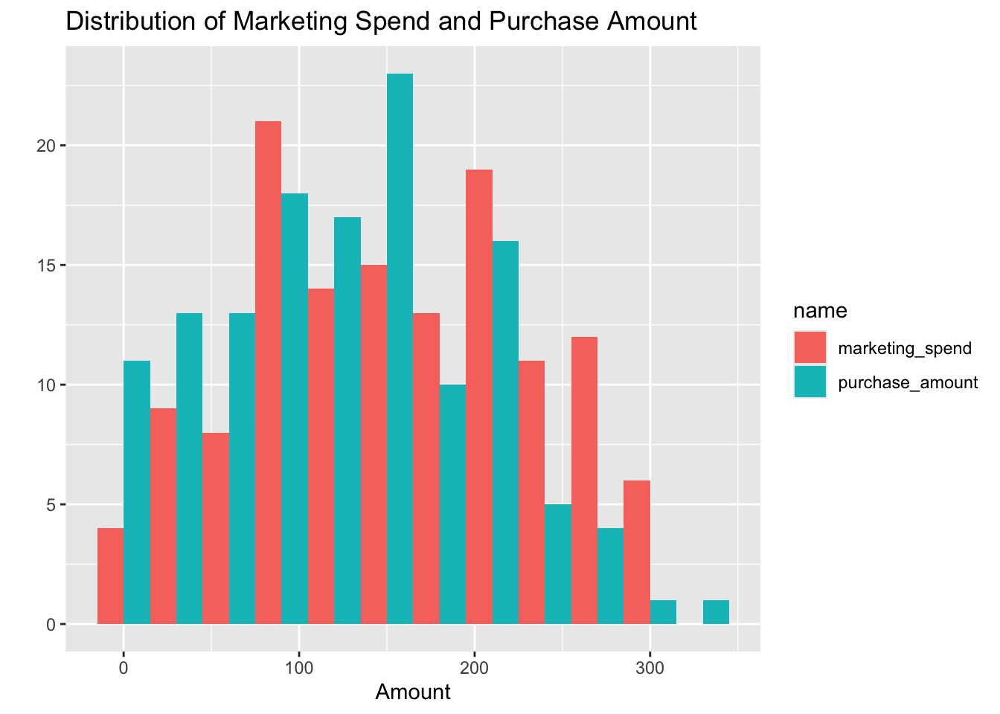
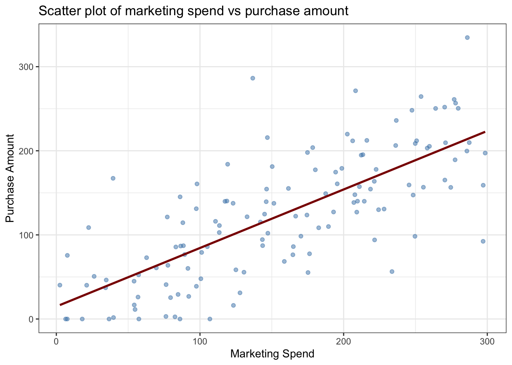
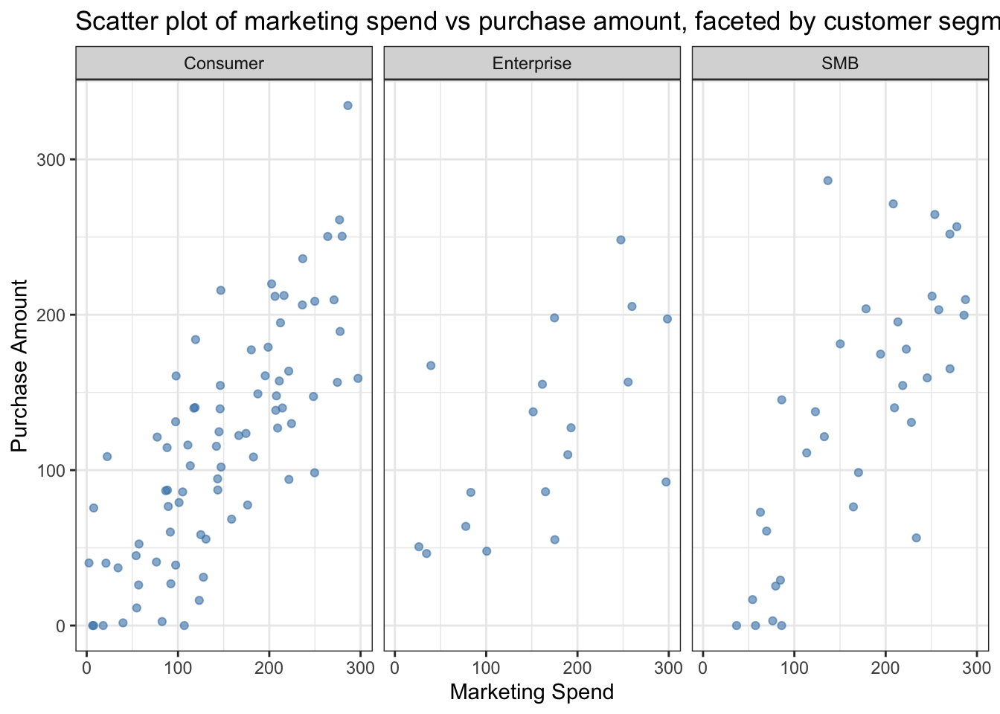

| marketing_spend | purchase_amount | |
|---|---|---|
| Min. : 2.47 | Min. : 0.00 | |
| 1st Qu.: 88.36 | 1st Qu.: 60.63 | |
| Median :150.86 | Median :124.17 | |
| Mean :155.72 | Mean :123.22 | |
| 3rd Qu.:219.35 | 3rd Qu.:177.52 | |
| Max. :298.53 | Max. :334.61 |
ETC5513_Assignment1
Introduction
This report analyses data from a personalised marketing campaign in which different levels of marketing expenditure were allocated to customers across various channels. The goal of the analysis is to investigate whether higher marketing spend per customer is associated with higher purchase amounts. Understanding this relationship is vital, as it will help evaluate the effectiveness of personalised marketing efforts. These insights will also inform future budget allocations and pricing strategies.
Research Question
The report investigates the primary question “Is there a relationship between marketing expenditure and customer purchase amounts”. It examines the relationship between marketing spend per customer (independent variable) and purchase amount (dependent variable). This question is explored using data collected from last quarter’s marketing campaign.
Dataset Introduction
The dataset records data from a personalised marketing campaign conducted over the last quarter for an online retailer. This data is observational in nature, as it is collected from a campaign. It contains a set of 150 customer records, where each row represents a unique customer. It captures seven variables: customer_id, signup_date, marketing_spend, visits, purchase_amount, segment (Consumer, Enterprise, or SMB), and notes. The key variables are marketing_spend and purchase_amount, which form the basis of the analysis.
To prepare the data for this analysis, the following steps were performed:
Duplicate records were removed to ensure each observation is unique, as duplicates could distort the relationship between the two variables.
Irrelevant columns were excluded such as
signup_date,visits, andnotes, as they do not serve any purpose for the research question or analysis.Rows with missing data were removed, as the two key primary variables are important (one is independent, the other is dependent); a row missing either of these values will not be able to contribute anything meaningful to the analysis.
The segment variable was converted into a factor, as R would otherwise treat it as a string variable. This ensures that R treats Consumer, SMB, and Enterprise as discrete groups. This variable will be incorporated into the analysis to gain a deeper understanding of the research question—whether the relationship between marketing spend and purchase amount differs across customer segments, and which segment responds most strongly to marketing expenditure.
Dataset Description
The cleaned dataset has 132 rows and 4 variables.
The variables in the dataset are:
customer_id: Unique identifier for each customer. data type = string.marketing_spend: The total amount spent on marketing for each customer. data type = double.purchase_amount: The total purchase amount made by each customer. data type= double.segment: The customer segment e.g. SMB, Consumer and Enterprise. data type= factor.
The Table 1 above summarises the minimum, median, mean and maximum values for both marketing_spend and purchase_amount, providing a numerical overview of the two key variables.
As we can see, for marketing_spend and purchase_amount, the mean (155.72 & 123.22) and median (150.86 & 124.17) are close, which indicates that both the variables are fairly distributed.
This suggests that our data is not heavily affected by outliers and will be able to reflect true and genuine patterns.
Notably, the mean of marketing_spend is higher than purchase_amount, which tells us that, on average, more money is being invested in customers than is returned through purchases.

The Figure 1 shows how the variables marketing_spend and purchase_amount are distributed across customers in the campaign.
We can see that the marketing_spend bars (pink) are fairly evenly distributed across the range, which is consistent with the mean and median seen in Table 1.
Meanwhile, the purchase_amount bars (blue) are more concentrated in the lower range (0–200), with a peak around 150 and a sharp drop after 200. Very few customers purchase above 250.
The purchase_amount bars are noticeably taller in the lower ranges, while the marketing_spend bars are taller in the higher ranges. This visually shows that beyond a certain level, marketing investment does not generate proportionately higher purchases. This suggests that there might be an optimal level of marketing investment that exists, and spending beyond that may lead to diminishing returns.
Results

The Figure 2 shows the relationship between marketing_spend and purchase_amount across all customers. The upward-sloping trend line shows the existence of a positive relationship between the two variables, where customers who received higher marketing spend made higher-value purchases.
Since the points are widely scattered around the trend line, we can assume that other factors, such as visits or customer_segment, may be influencing purchase decisions.
Overall, Figure 2 indicates that there is a positive yet moderate relationship between the two key primary variables.

The Figure 3 shows the relationship between marketing_spend and purchase_amount segment-wise. Across all three segments, we can see an upward pattern, which shows that a positive relationship exists irrespective of the segment.
Zero purchase amounts are seen in the Consumer and SMB segments, but not in the Enterprise segment; this could be due to the fact that they have fixed budgets and needs, meaning they are likely to purchase despite the level of marketing investment allocated to their segment.
Additionally, the zero (purchase amounts) in the SMB segment are seen at low levels of marketing spend, which suggests that a minimum level of marketing investment must be allocated to drive purchases.
Lastly, we can see that Consumers have widely spread points, indicating that their behaviour is hard to predict and that other factors may influence purchasing decisions.
Conclusion
In conclusion, we can see that there is a positive relationship between marketing_spend and purchase_amount across all segments; however, we can conclude that marketing_spend alone is not sufficient to drive purchases.